也紀念我們永遠的朋友 李士傑先生（Shih-Chieh Ilya Li）。
The Battle for Wesnoth 繁體中文化參與心得
開放源碼軟體透過眾人協作的方式開發，而使用者介面也是經由各地的社群努力才有當地語言的在地化版本。今天很高興請到臺北維基社群的章 · 安德魯，來談談他當初參與一款開源遊戲的繁體中文化經驗－韋諾之戰 (The Battle for Wesnoth)。
Q1. 當初是怎麼接觸「韋諾之戰」的？
A1. 我在中文維基百科的新條目推薦（https://zh.wikipedia.org/wiki/Talk:韦诺之战 2008 年 10 月 3 日 (五) 04:42 (UTC)）看到韋諾的介紹，看完之後就去投票支持，並下載來玩。
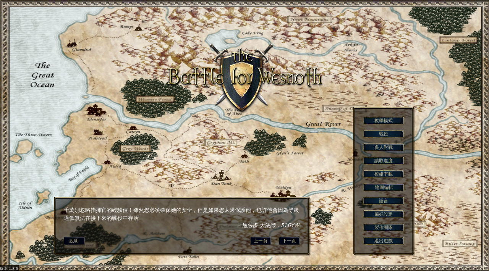
▲ 圖1
Q2. 看來你從維基認識不少東西。韋諾是屬於什麼性質的遊戲？怎麼玩？
A2. 韋諾之戰是開放源碼遊戲，與 The Mana World 或是 0 A.D. 一樣，在原作者保留部份權利下，可供他人進行自由修改。韋諾之戰採用「回合制策略」，意味著我方單位進行動作後，就會輪到敵方（或友方）進行。這款遊戲的設計，相對其他遊戲而言，規則簡單、易上手。遊戲介紹請參考中文維基條目：「韋諾之戰」https://zh.wikipedia.org/zh-tw/韦诺之战，以及官方的遊戲操作手冊 https://svn.gna.org/viewcvs/*checkout*/wesnoth/branches/1.8/doc/manual/manual.zh_TW.html。
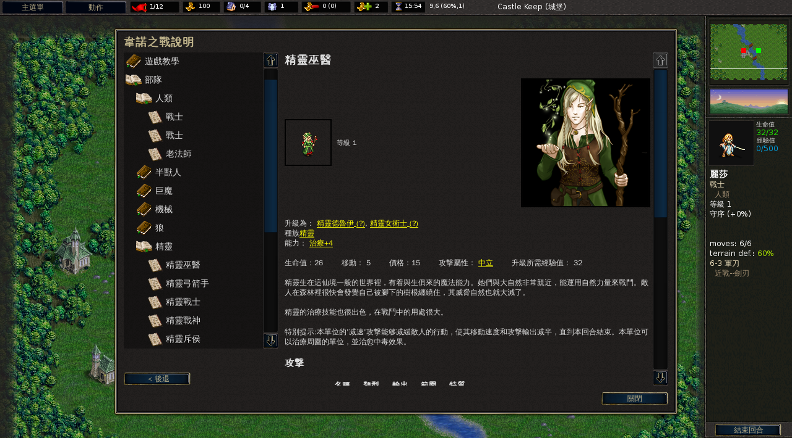
▲ 圖2
Q3.「韋諾之戰」與一般回合制遊戲相比，有何異同之處？例如和老字號的「文明帝國」比較呢？
A3.好難回答啊。一個很少玩遊戲的人很難做「遊戲比較」這樣的事。雖然這幾個遊戲都很有名，但我只有在同學玩的時候在旁圍觀而已。
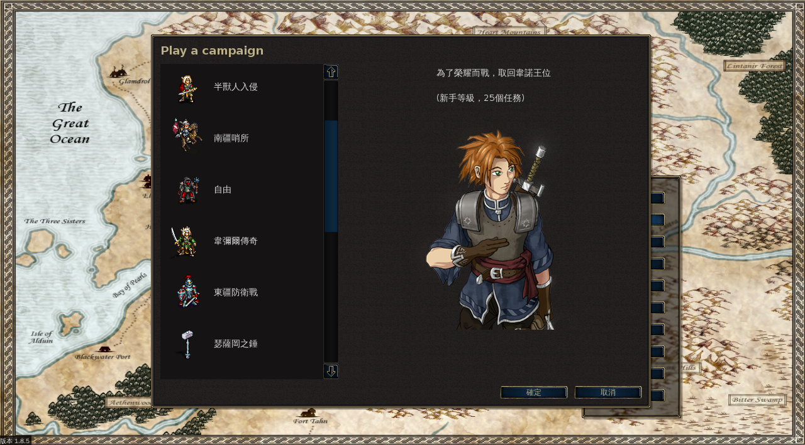
▲ 圖3
突然想到裡面有場戰役，外國作者其實參考了一個很有意思的來源。最早期的戰役 Heir to the Throne（王位繼承者）敘述韋諾王國太后「艾斯威勒」在兒子死後殺盡王族，進行篡位，但是有個「康拉德」王子據說被大法師「迪法多」營救，之後展開漫長的躲避追殺旅程。這與《舊約聖經》列王紀下第十一章的情節相似：猶大國太后「亞他利雅」篡位、剿滅王室，但是有位王子「約阿施」被藏匿，後來經由大祭司「耶何耶大」的幫助成功復位。也許提到現在以色列祖先的故事，會先想到摩西出埃及，然而摩西並不一樣，當時的埃及法老本來就是繼承人，也沒有屠殺王室。
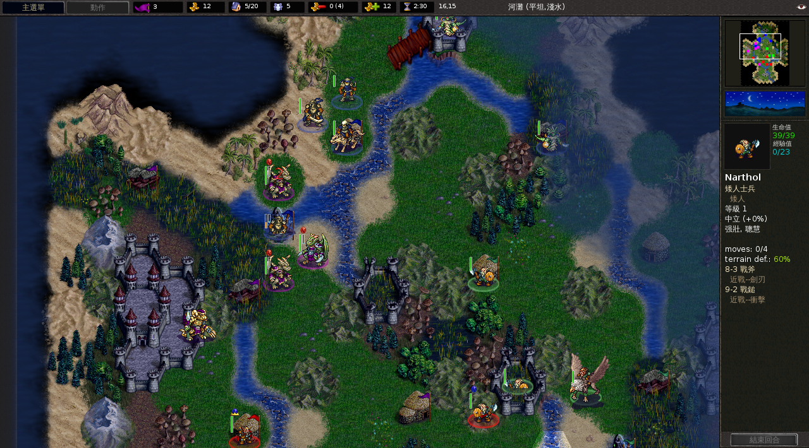
▲ 圖4
Q4. 開放源碼遊戲與一般商業遊戲有何不同？
A4. 開放源碼遊戲的最大優點在於：遊戲正式版本的開發與維護都是由玩家們自由參與，一般玩家也可以直接使用正式網站提供的各式遊戲配件，例如地圖、戰役、圖檔等元素，來進行新的戰役設計，甚至有可能成為正式戰役，例如戰役 Delfador's Memoirs（迪法多回憶錄）在 1.6 版時仍是測試版，回合不完全，功能也有殘缺，需要另外點選「模組下載」到正式伺服器 add-ons.wesnoth.org 自行下載，而在 1.8 版完成開發後遂成為正式戰役。而商業遊戲則是由遊戲公司的開發團隊進行維護，享有智慧財產權的保護，一般人無權對遊戲進行重製、複製，因此商業遊戲的玩家只能是遊戲的「接受者」而非「主導者」。
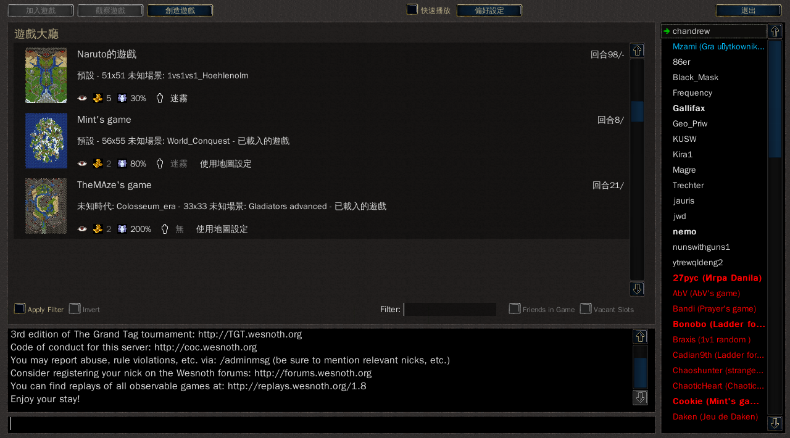
▲ 圖5
Q5. 我不會寫程式，可以來參與專案嗎？
A5. 可以的，中文化的翻譯流程真的很簡便。韋諾之戰 (The Battle For Wesnoth) 這款遊戲的翻譯檔使用 po 檔，我是在 Ubuntu Linux 系統下用 Poedit 進行繁體中文化。而且對岸也有另一組翻譯團隊，因此後者的翻譯檔也可以供作參考，只是由於每位譯者的翻譯品質與風格優劣不一，並且涉及地區用語的差異，在使用上需要多加留意。台灣繁體中文化團隊的翻譯進度可以在以下連結取得：https://www.wesnoth.org/gettext/index.lang.php?lang=zh_TW&version=branch。
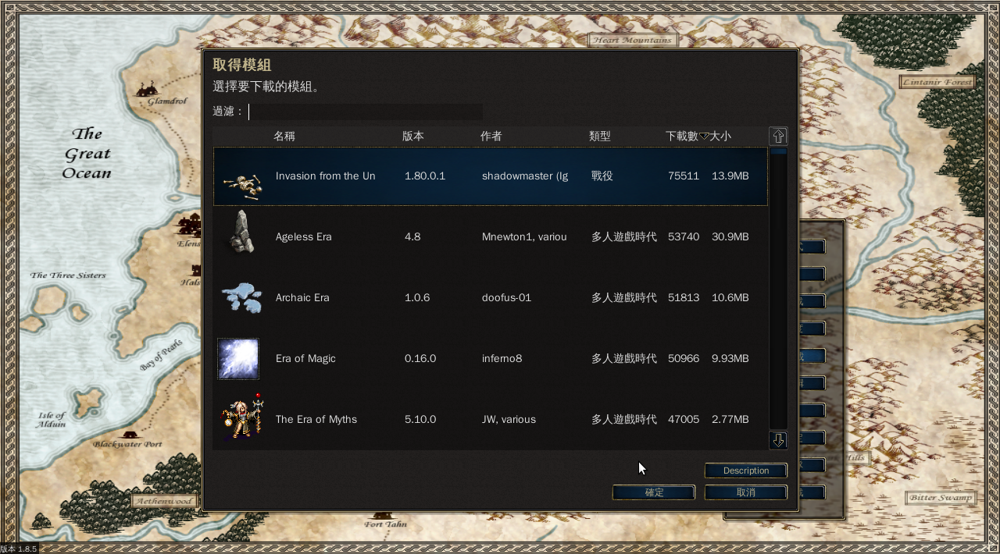
▲ 圖6
Q6. 以韋諾為例，是怎麼分工的？
A6. 目前台灣這邊我沒有聽說過有玩家自行製作戰役，而正式開發團隊那邊的分工，我並沒有特別關心。本地化的部份，繁體中文化團隊在 2008 年有開過幾次團隊會議，當時除了團隊會議，平日也保持 Gtalk 或 Email 聯絡以進行意見交換與協調。字體顯示的問題長久以來一直令人困擾，恰巧團隊成員各自擁有不同的作業系統，所以便成為很重要的測試平台。而新單位的名稱翻譯，也藉由開會讓團隊成員共同決定。單位一覽表：https://www.wesnoth.org/units/1.8/zh_TW/mainline.html。
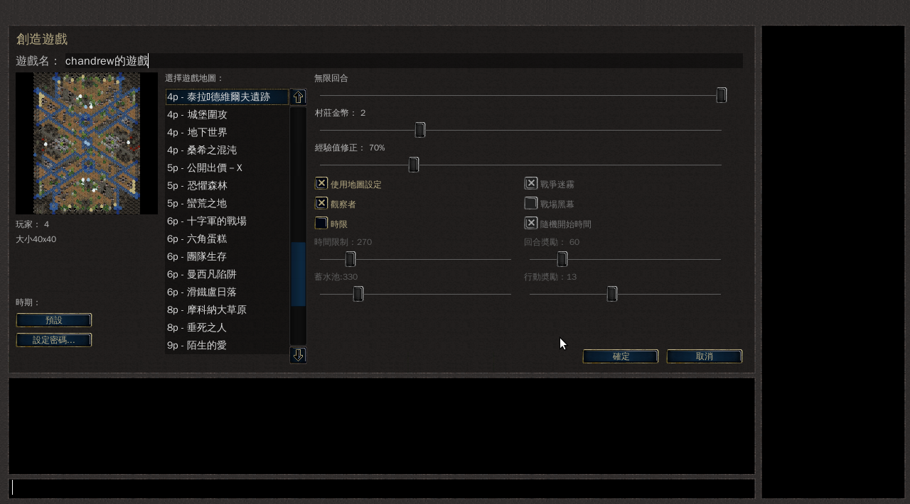
▲ 圖7
Q7. 接下來想問的問題是針對繁體化。在台灣推廣軟體，介面繁體化很重要。你提到 Wesnoth 的開發者對於中文有兩種字體感到困惑，其他的專案開發者應該也會有類似疑問：同樣是中文怎麼有兩種不同書寫方式？你如何向官方解釋繁體中文與簡體中文的議題？
A7. 我覺得很不好意思，後面這個提問，我想我幫不上忙，因為當時是由團長楊綮銘去申請團隊的，當年碰到的問題確如提問所說，但是楊兄並未向我透露這件事的細節，因此這一部份的經驗可能要向楊兄請教才得以知曉，我也好久沒跟他聯絡了。其實我也很好奇當初為什麼他會想去申請中文化（繁體中文化）。
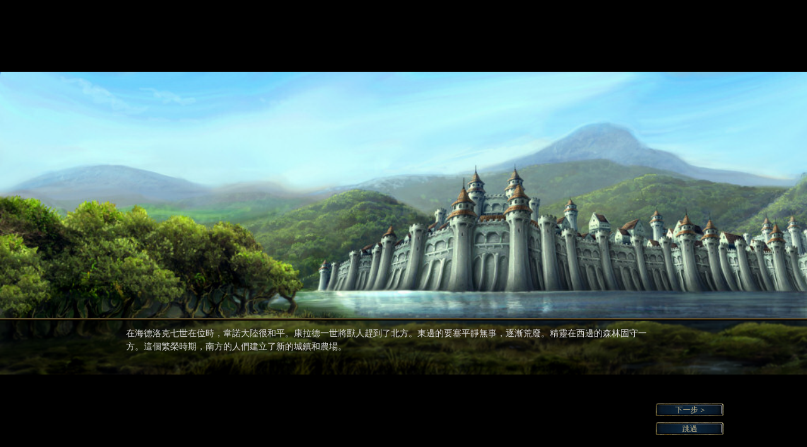
▲ 圖8
Q8. po 檔是什麼？軟體在地化常常用這種檔案嗎？
A8. po 檔是可以進行多國語系翻譯的檔案格式，用來進行比對工作。而另外生成的 mo 檔則是讓系統進行讀取。在翻譯時需要注意，中文化遇到參數的部份不能隨便修改，不然會顯示不正常。有做過 Windows 系統下的一些軟體中文化，就會知道沒有 po 檔這種獨立的翻譯檔，就需要「十八般武藝」才能搞定（有時還是不可能搞定，這是後話）。遇到 ASCII 這類就要抽取字串，這很累的。還有很多是加密加殼的，還是變形殼，那更慘，手動脫殼很不好操作。po 檔在自由軟體很常使用，非自由軟體則到近年才開始採用。
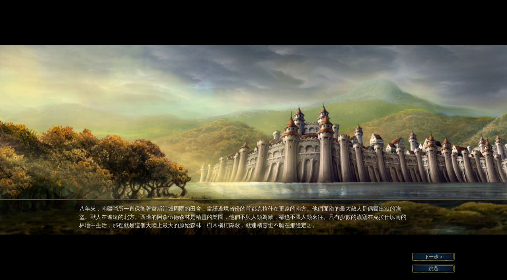
▲ 圖9
Q9. 如何鼓勵台灣人參與？
A9. 韋諾之戰目前仍有許多戰役尚未繁體中文化，或是只有零星翻譯，而且礙於團隊人數不多，趨向於一個戰役只由一個人進行負責，因此少部份專有名詞在整體上很難完全協調。這些都是可以鼓勵台灣玩家多加參與的地方。台灣的繁體中文化團隊成員名單：https://wesnoth-tw.blogspot.com/2009/04/blog-post.html。
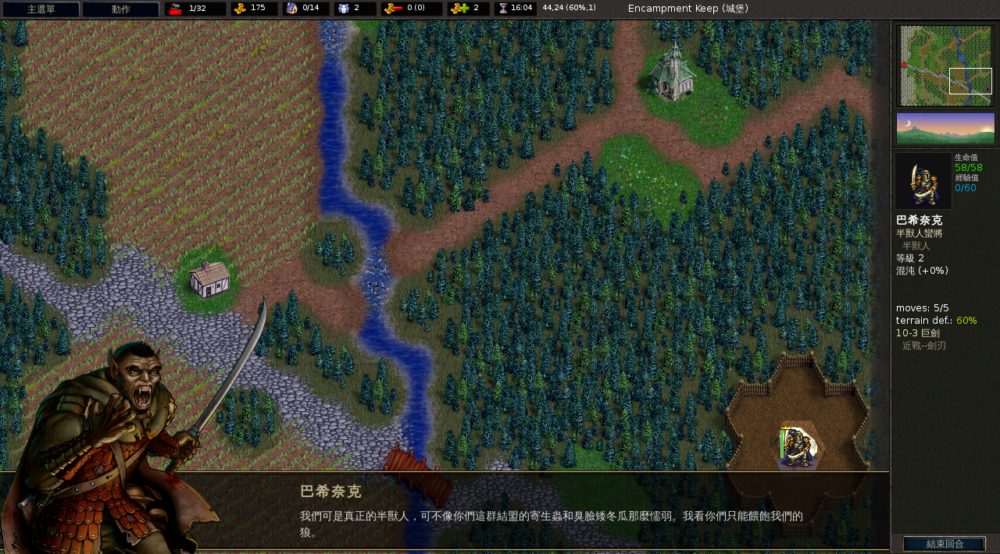
▲ 圖10
Q10. 來講講你參與的感想好了。與玩遊戲不同，實際參與中文化給你什麼感覺？
A10. 參與中文化的收穫就是帶給我成就感，也更了解戰役的故事內容，以及主線與分支劇情的發展（因為全都要翻譯），所以在斟酌用字遣詞之間，也能欣賞其戰役的故事創作。另外還可以注意到很多小細節，例如 The Rise of Wesnoth（韋諾的崛起）的樹人 NPC，名字很長，使用魔戒出現的詞彙，這一度造成我中譯的困擾。
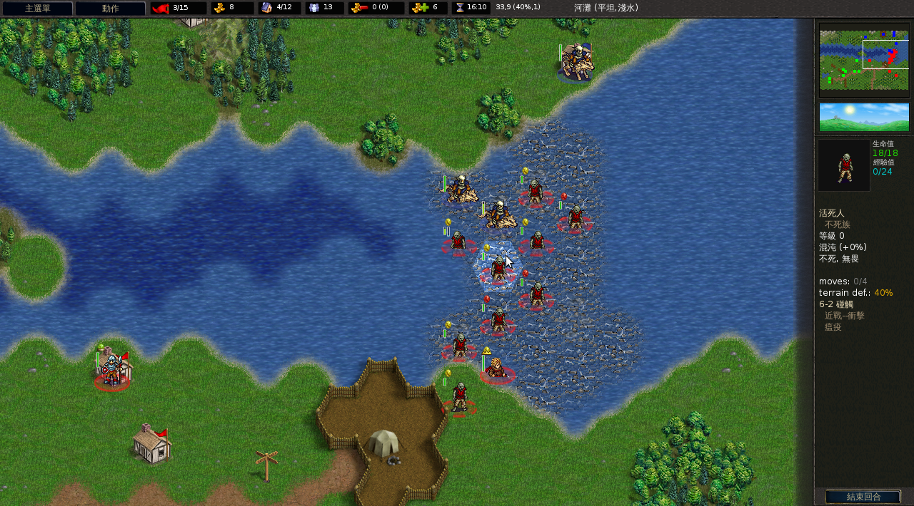
▲ 圖11
Q11. 樹人 NPC 的名字還記得嗎？
A11. 我去挖了一下 po 檔，裡面有寫。那時候我看到就覺得快要哭了，好長一串。像是 Elilmaldur-Rithrandil，Muldondindal，Landunwonbam，Bolwuldelman，Laffalialomdium 等等。由於找不出恰當的翻譯，最後採用音譯。NPC 中譯有個好處，就是能與隨機招出的一般單位區隔，因為一般單位的名字是隨機配給的，目前繁中化團隊沒有對檔案庫進行翻譯。還有，我從國中開始就嘗試中文化，私下做了幾個中文化程式包（沒有發布出去，怕會惹麻煩），到現在還是不會寫程式，唉！以前很喜歡逛中文化軟體聯盟 (CPATCH)，也常去對岸的一些知名大站，例如「漢化新世紀」等去看教學帖，的確有長點知識。某種程度上來講，其實對後來參與中文維基的條目翻譯很有幫助。
Q12. 軟體中文化與參與維基百科翻譯條目有什麼異同？
A12. 軟體中文化通常是翻譯比較生硬的操作介面，只有像是遊戲會翻譯比較生動的敘述。我覺得「軟體中文化」與「翻譯條目」兩者真正的差異，在於軟體中文化的語氣通常是第一人稱，只要能向使用者表達功能的使用即可，而百科條目的翻譯則是比較客觀的敘述，篇幅長，需有通盤的介紹。而且長期進行兩者的翻譯，收穫面向是不一樣的，軟體中文化偏向操作或譯詞技巧，而百科條目則是寫作與知識的增長。
關於韋諾之戰的訊息：
英文維基百科的介紹：https://en.wikipedia.org/wiki/The_Battle_for_Wesnoth
中文維基百科的介紹：https://zh.wikipedia.org/wiki/Talk:韦诺之战
臺灣繁體化成員部落格：https://wesnoth-tw.blogspot.com/2009/04/blog-post.html
關於 Poedit 的訊息：
Poedit 的 po 檔：https://jedi.org/blog/archives/004297.html
https://www.poedit.net/translations.php
https://azo-freeware.blogspot.com/2009/08/poedit-142.html
訪談者簡介
章 · 安德魯，台灣維基社群成員。自然科學與歷史人文的愛好者，對開源軟體的魅力無法抗拒，「因為你的財寶在哪裡，你的心也在那裡。」有關我的二三事：https://about.me/Ch.Andrew。
專欄總覽


E-Mail：contact@openfoundry.org Address：台北市南港區研究院路2段128號 中央研究院資訊科學研究所 . 隱私權條款. 使用條款